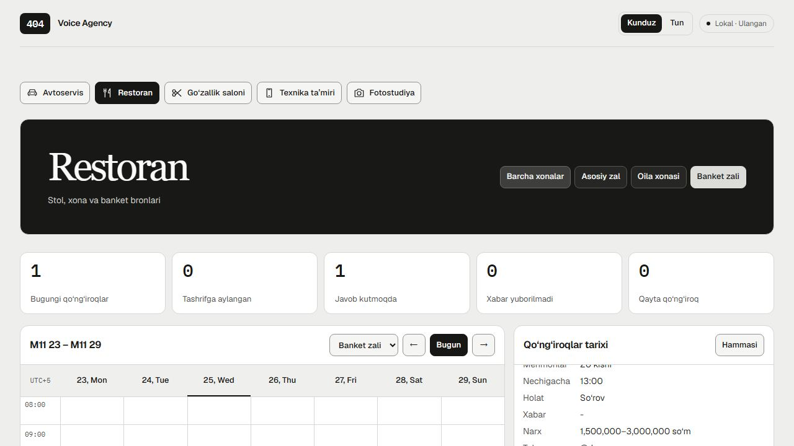
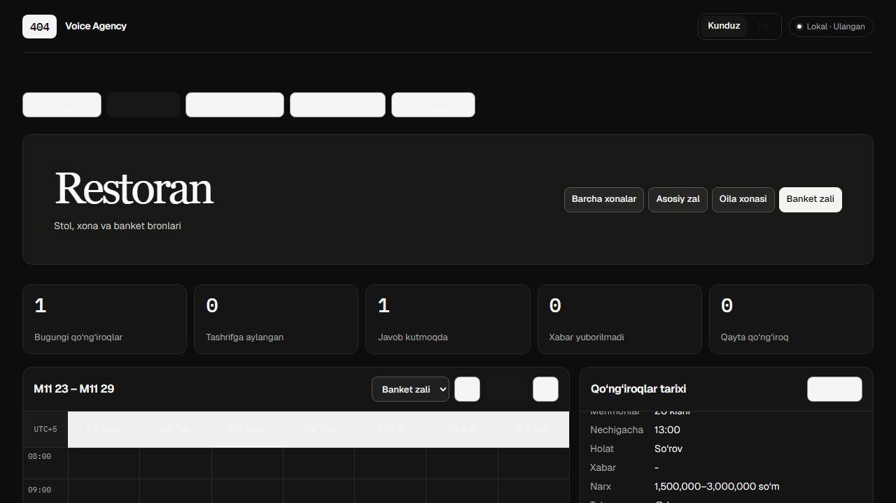

Voice Agency 404
Telegram qo‘ng‘irog‘idan tasdiqlangan brongacha.
404 jamoasi · Hackathon prototipi · 25-noyabr 2026
Telegram qo‘ng‘irog‘idan tasdiqlangan brongacha.
404 jamoasi · Hackathon prototipi · 25-noyabr 2026
Xodim mijozga xizmat ko‘rsatayotganda navbatdagi qo‘ng‘iroq keladi.
Voice Agency qo‘ng‘iroqni qabul qiladi, tafsilotlarni yig‘adi va xodimga ko‘rinadigan so‘rov yaratadi.
Avtoservis · Restoran · Go‘zallik saloni · Texnika ta’miri · Fotostudiya
Yo‘nalish tanlovi keyingi qo‘ng‘iroqni shu xizmatning savollari, tariflari va jadvaliga ulaydi.
Xona, sana, boshlanish va tugash vaqti, mehmonlar soni hamda taomlar.
«Payshanba 10:00–13:00, Banket zali, 20 kishi. To‘g‘rimi?» Mijoz tasdiqlagach, so‘rov saqlanadi.
Haqiqiy dashboard. Xonalar, haftalik kalendar va tanlangan menyu.

Xodim omonatni qayd qiladi va bronni qabul qiladi. Mijoz Telegram’da tasdiq oladi.

O‘zbekcha · Ruscha · Inglizcha
Gemini Live salomni qo‘ng‘iroq ko‘tarilishidan oldin tayyorlaydi. AI so‘ralgan aniq vaqtni tekshiradi va muqobil vaqtni mijoz bilan kelishadi.
Qo‘ng‘iroqdan bronga o‘tish, kelgan mijozlar ulushi va tasdiqqacha ketgan vaqtni o‘lchaymiz.
Omonat prototipda xodim tomonidan qayd qilinadi. 404 jamoasi · MIT ochiq kod.